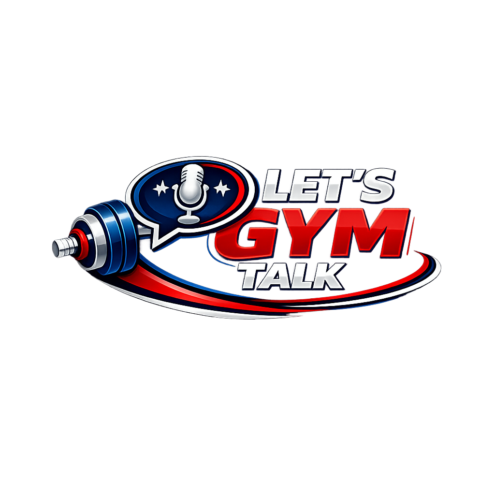
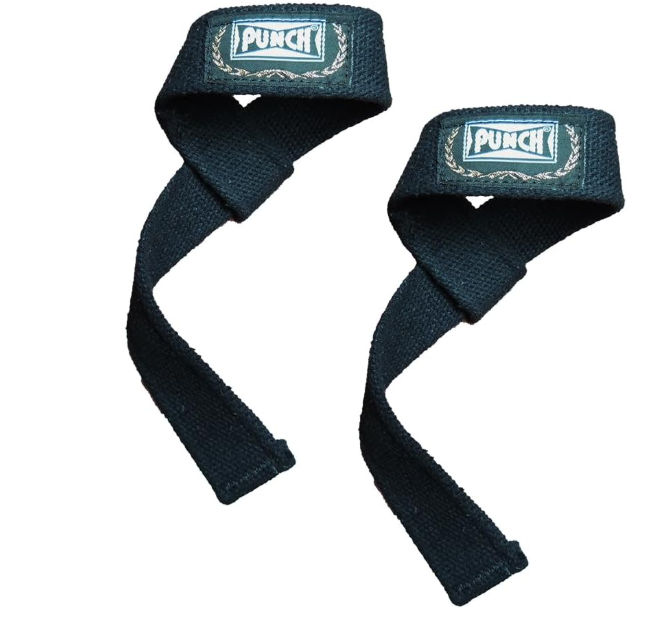
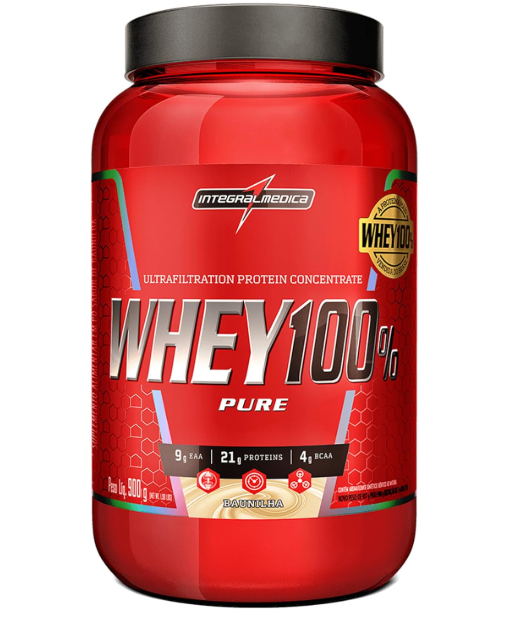
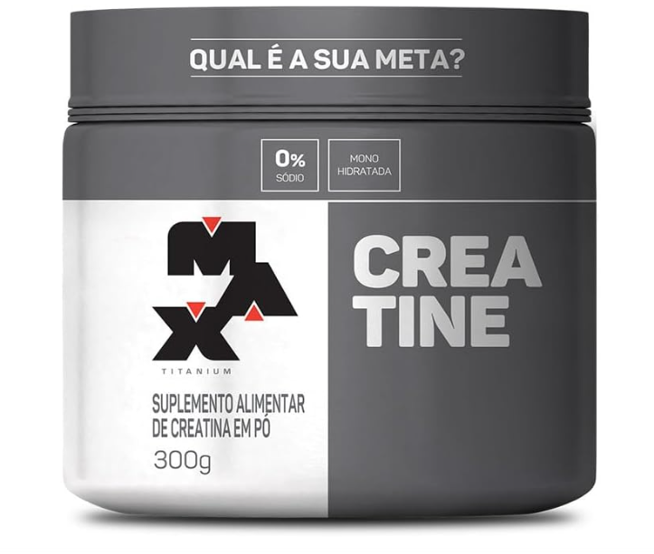
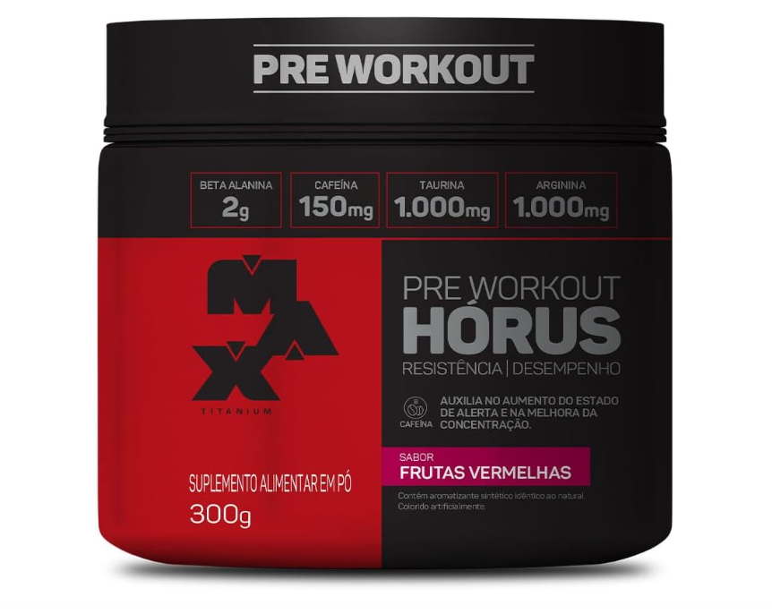

Academia, ciência e motivação
Bem-vindo ao Let’s Gym Talk. Aqui você encontra conteúdos completos sobre academia, musculação, dieta e suplementação — com linguagem simples e respaldo científico.
🎯 Objetivo do site: te ajudar a treinar melhor, evoluir mais rápido e evitar erros comuns.
⚠️ Conteúdo educativo. Não substitui acompanhamento médico, nutricional ou de profissional de educação física.
Se você caiu aqui agora, siga esse caminho. Ele é o mais eficiente para iniciantes e também para quem quer resultados rápidos.
O melhor ponto de partida para quem está começando. Aprenda a treinar sem exagerar e sem se machucar.
Ler guiaQuer perder gordura? Entenda como funciona o déficit calórico e como emagrecer sem perder massa muscular.
Ler guiaQuer crescer? Veja como aumentar calorias corretamente e evitar ganho excessivo de gordura.
Ler guiaO suplemento mais estudado do mundo fitness. Saiba como usar corretamente e quais marcas valem mais a pena.
Ver Top CreatinasAntes de iniciar um treino estruturado, é recomendado avaliar seu estado de saúde geral, especialmente se houver histórico de hipertensão, diabetes, obesidade, sedentarismo prolongado, dor articular frequente ou problemas cardiovasculares.
A musculação é extremamente benéfica, mas o melhor caminho é começar com progressão gradual e técnica correta.
Nas primeiras semanas, o foco não é levantar o máximo de peso. O objetivo é aprender a execução, ganhar consciência corporal e criar consistência.
Dor muscular tardia (aquela dor 24-48h após o treino) é normal no início. Já dor articular forte, pontada ou dor que piora durante o exercício deve ser investigada.
Melhora coordenação, postura, força e reduz risco de lesões quando feita com supervisão e técnica correta.
Ajuda no emagrecimento, aumenta massa magra, melhora saúde mental e reduz risco de doenças metabólicas.
Ajuda na prevenção da sarcopenia, aumenta autonomia, reduz risco de quedas e melhora qualidade de vida.
Seu corpo se adapta. Para continuar evoluindo, você precisa aumentar gradualmente estímulos. Isso pode acontecer aumentando carga, repetições, séries ou melhorando execução.
Em geral, treinar cada grupo muscular cerca de 2 vezes por semana tende a ser eficiente para hipertrofia, desde que o volume total e recuperação estejam equilibrados.
Exercícios compostos e pesados geralmente exigem 2-3 minutos de descanso. Exercícios isolados podem ser feitos com 1 minuto.
Sim. A musculação aumenta massa magra e melhora o metabolismo. Porém o emagrecimento acontece com déficit calórico.
Não necessariamente. Cardio moderado pode ajudar na saúde e resistência. O excesso pode prejudicar recuperação.
Não. Eles são suplementos, não substitutos. Podem facilitar resultados, mas dieta e treino são a base.
Mudanças podem aparecer entre 4 e 12 semanas. Resultados reais vêm com meses de consistência e progressão.
Consumir menos calorias do que gasta. Estratégia principal para emagrecimento.
Consumir mais calorias do que gasta. Estratégia principal para hipertrofia e ganho de massa muscular.
Ganhar músculo e perder gordura ao mesmo tempo. Mais comum em iniciantes e pessoas retornando ao treino.
A literatura científica aponta que a hipertrofia costuma ser otimizada em torno de 1,6g a 2,2g de proteína por kg de peso corporal.
Carboidratos são o combustível do treino pesado. Cortar demais pode reduzir força, volume e recuperação.
Gorduras são essenciais para saúde hormonal e absorção de vitaminas. Priorize azeite, ovos, castanhas e peixes.
Para avançados, alternar volume, intensidade e fases de treino ajuda a quebrar platôs e evitar overtraining.
A falha pode ser útil, mas não deve ser usada em todo treino. Em excesso, prejudica recuperação e aumenta risco de lesão.
Sono ruim e estresse alto diminuem performance e dificultam hipertrofia. Em nível avançado, recuperação é tão importante quanto treino.
Conteúdos completos com embasamento científico para você evoluir mais rápido e com segurança.
Descubra como tomar creatina, se faz mal e quais são as melhores opções para comprar.
Ver Top CreatinasTreino completo para iniciantes com evolução segura e ótima base para hipertrofia.
Ler artigoEntenda como perder gordura com saúde e sem perder massa muscular.
Ler artigoSaiba quando whey realmente ajuda e quando é só gasto desnecessário.
Ler artigoSuplementos e acessórios não são obrigatórios, mas podem facilitar sua rotina. Se você quiser investir em algo, aqui estão opções úteis e populares.

Ajuda na pegada em puxadas e remadas, reduz fadiga do antebraço.
Qualidade: ⭐⭐⭐⭐⭐
Uso: Use em treinos de costas e terra quando necessário.
Ver na Amazon
Ajuda a bater a meta de proteína com praticidade no dia a dia.
Qualidade: ⭐⭐⭐⭐⭐
Uso: Misture com água ou leite conforme rótulo.
Ver na Amazon
Suplemento mais estudado para força, desempenho e hipertrofia.
Qualidade: ⭐⭐⭐⭐⭐
Uso: 3g a 5g por dia, todos os dias.
Ver na Amazon
Ajuda energia e foco, especialmente em dias cansativos (use com responsabilidade).
Qualidade: ⭐⭐⭐⭐⭐
Uso: Tome antes do treino conforme orientação do rótulo.
Ver na Amazon⚠️ Links de afiliado: se você comprar por eles, o site pode receber comissão sem custo extra para você.